|
IdentityGuard Server 13.0 Administration Guide |
|
IdentityGuard Server 13.0 Administration Guide |
Complete both procedures in this section only if you are using a Microsoft CA or a Microsoft CA integrated with Entrust IdentityGuard through Entrust CA Gateway.
You must create an IG Dual Usage certificate template on the Microsoft CA computer. The CA uses this template to generate user’s certificates (also known as digital IDs).
To create the IG Dual Usage certificate template
1. In Microsoft CA Server 2016 or later, open the certsrv (certification service) window. There are two ways to open it.
● Open the Control Panel and click Administrative Tools, In the right pane, double-click Certification Authority. The certsrv window opens.
OR
● Open the
Control Panel, click Administrative
Tools, then click Server Manager.  More...
More...
2. To view the certificate templates, in the left pane of the certsrv window, expand the name of your Microsoft CA server, right-click Certificate Templates, and then select Manage from the list that appears.
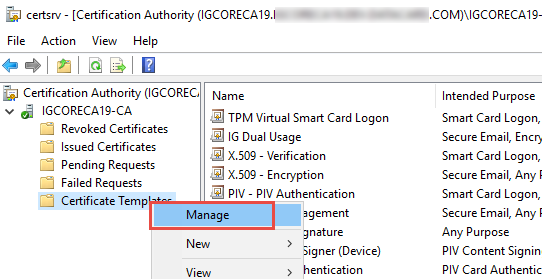
The Certificate Templates Console opens.
3. In the Template Display Name column, right-click the User certificate template, and then select Duplicate Template from the list that appears.
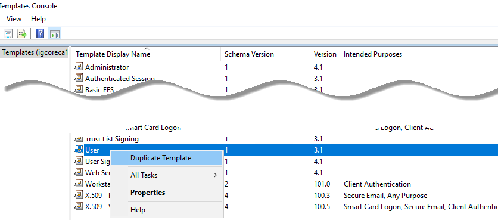
The Properties of New Template window opens.
4. On the Compatibility tab, configure the following settings:
● Certification Authority – From the drop-down list, select the operating system of computers in your network with which your Microsoft CA host needs to be compatible.
● Certificate Recipient – From the drop-down list, select the pair of compatible operating systems for client and server computer .in your network with which your Microsoft CA host needs to be compatible.
● Show resulting changes – (Optional) If this check box is selected, a message lists the options that will be added with you choice. Click OK to dismiss the message.
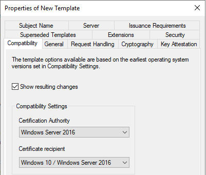
5. On the General tab, configure the following settings:
● Template display name – Enter:IG Dual Usage
● Template name – This is filled in automatically with the template display name (with no spaces).
● Publish certificate in Active Directory – Deselect this option.
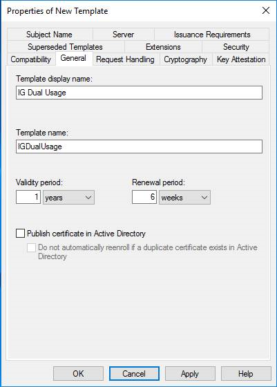
6. On the Request Handling tab, from the Purpose drop-down list, select Signature.and encryption.
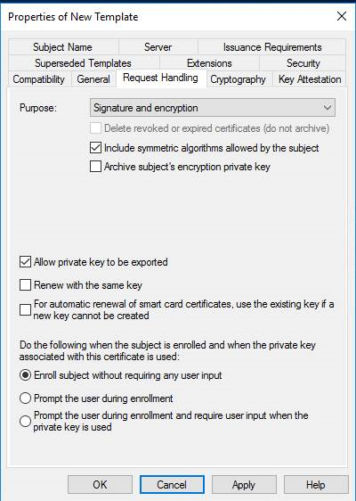
7. On the Cryptography tab, configure the following settings:
● Provider Category – Select Key Storage Provider.
● Algorithm name – RSA
● Minimum key size – 2048
● Request hash – Select SHA256 from the drop-down list.
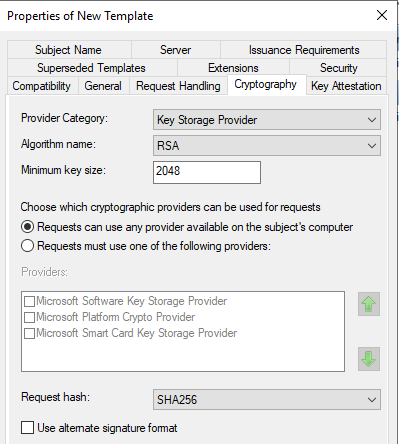
8. On the Subject Name tab, configure the following settings:
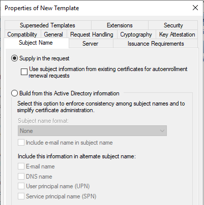
● Supply in the request – Select this option.
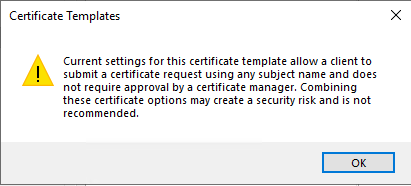
When asked to confirm the change, click OK. In this case, security is maintained because an administrator will be requesting certificates for end users.
9. On the Extensions tab, select Application Policies, and then click Edit.
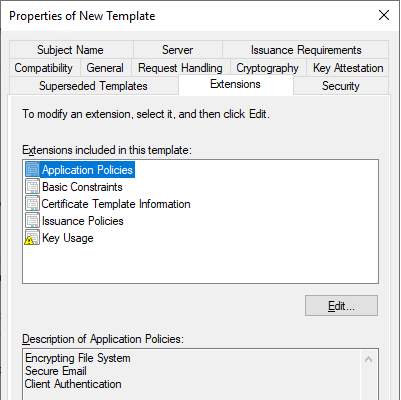
The Edit Application Policies Extension window opens.
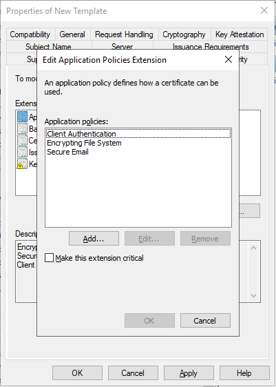
10. Add two new policies: Any Purpose and Document Signing.
a. On the Edit Application Policies Extension window, click Add. The Add Application Policy window opens.
b. On the Add Application Policy window, select Any Purpose, and then click OK.
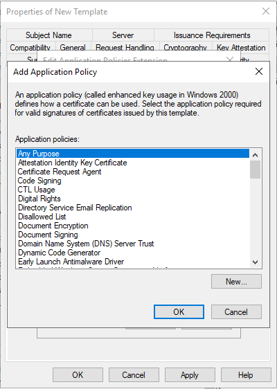
c. Repeat steps a. and b., but this time select the Document Signing policy. The resulting list of application policies should have Any Purpose, Client Authentication, Document Signing, Encrypting File System, and Secure Email.
11. Click OK to close the open windows and save the settings for the new template.
The IG Dual Usage certificate template is added to the list of templates.
To configure the CA to use the IG Dual Usage template
1. On your Microsoft CA computer, open Server Manager by clicking Start > Administrative Tools > Server Manager.
2. In
the left navigation pane, expand Server
Manager > Roles >
Active Directory Certificate Services,
and select your CA’s common name. It is this entry: 
3. In the main pane, right-click Certificate Templates and select New > Certificate Template to Issue.
4. Select IG Dual Usage.
5. Click OK.
Your Microsoft CA now uses the IG Dual Usage template to issue user digital IDs.